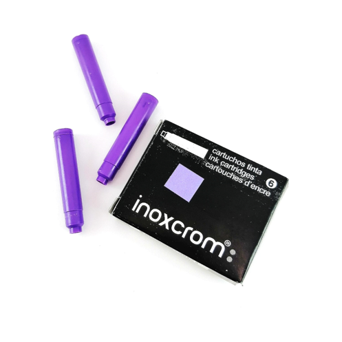
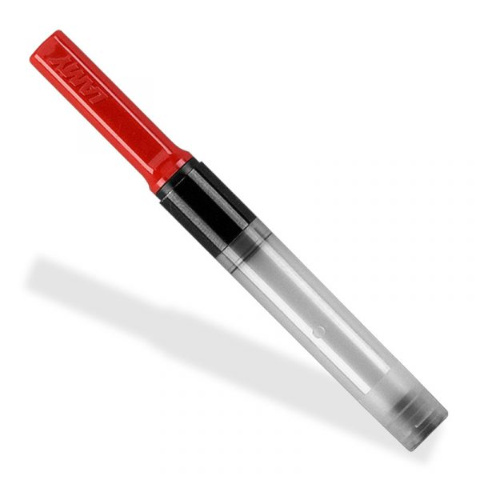
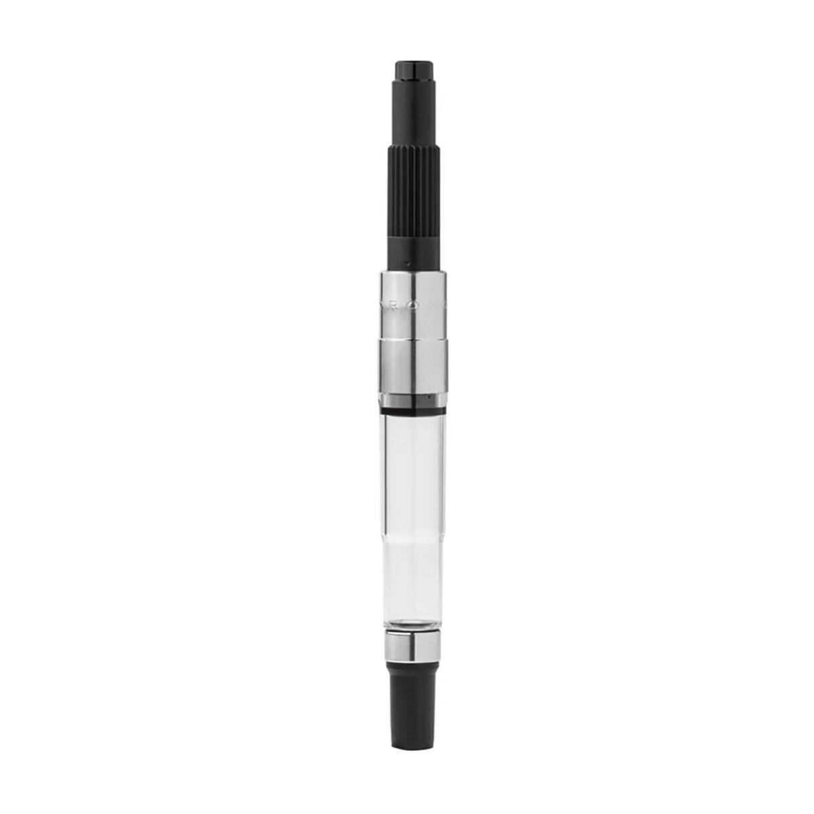

Introducción a las Plumas Estilográficas
Las plumas estilográficas son herramientas de escritura que utilizan tinta líquida y se caracterizan por su capacidad de ofrecer una experiencia de escritura suave y precisa. Su origen se remonta a los siglos pasados, cuando se buscaba una alternativa más eficiente a las plumas de ave y los primeros instrumentos de escritura. Con el paso del tiempo, las plumas estilográficas han evolucionado en términos de diseño, materiales y tecnología, convirtiéndose en artículos de lujo para entusiastas y coleccionistas.
En la actualidad, las plumas estilográficas no solo se utilizan para escribir, sino que también se aprecian por su valor estético y como símbolo de estatus. El acto de escribir con una pluma estilográfica puede hacer que la tarea de tomar notas o firmar documentos se convierta en una experiencia más gratificante y personal.
Tipos de Recarga
Existen varios tipos de plumas estilográficas, cada una con características y mecanismos distintos para adaptarse a diferentes preferencias y necesidades. A continuación, se describen los principales tipos:
- Pluma de Carga de Cartucho: Este tipo de pluma utiliza cartuchos de tinta desechables. Son fáciles de usar y cambiar, lo que las convierte en una opción conveniente para quienes buscan simplicidad y rapidez en el proceso de escritura.
- Pluma de Carga de Convertidor: Equipadas con un convertidor, estas plumas permiten rellenar la tinta desde frascos. Esta opción es ideal para aquellos que desean utilizar diferentes colores de tinta o prefieren la flexibilidad de elegir su tinta. El proceso de llenado puede requerir algo de práctica.
- Pluma de Carga de Émbolo: Incorporan un mecanismo de émbolo para aspirar la tinta desde el frasco. Ofrecen una gran capacidad de tinta y son apreciadas por su construcción robusta y duradera. Requieren un mantenimiento regular para asegurar su correcto funcionamiento.
Comparativa de Tipos de Recarga
| Tipo | Descripción | Ventajas | Desventajas | Imagen |
|---|---|---|---|---|
| Cartucho | Utiliza cartuchos desechables que se insertan en la pluma. | Fácil de usar, mantenimiento mínimo, menos desordenado. | Costoso a largo plazo, menos opciones de tinta, no ecológico. |  |
| Convertidor | Permite rellenar la pluma desde frascos de tinta. | Más económico a largo plazo, ofrece una mayor variedad de tintas, más ecológico. | Puede ser complicado para principiantes, requiere frascos de tinta. |  |
| Émbolo | Incorpora un mecanismo de émbolo para aspirar la tinta. | Gran capacidad de tinta, generalmente construidas con materiales de alta calidad, elegantes. | Más caro, requiere mantenimiento regular, proceso de carga puede ser más complejo. |  |
Tipos de Punta
El plumín es una parte crucial de la pluma estilográfica que define el estilo y la suavidad de la escritura. Aquí están los tipos más comunes:
- Fino (Fine): Ideal para escritura detallada y precisa. Perfecto para documentos formales o trabajos que requieren precisión.
- Medio (Medium): Versátil y adecuado para la mayoría de los usos generales. Ofrece un equilibrio entre precisión y fluidez.
- Grueso (Broad): Proporciona una línea más ancha, ideal para escritura expresiva y caligrafía. Perfecto para firmar documentos o para efectos decorativos.
- Flexible: Ofrece variación en el grosor de la línea dependiendo de la presión aplicada. Ideal para caligrafía y escritura personalizada.
Cuidados y Mantenimiento
Para garantizar que tu pluma estilográfica funcione correctamente y tenga una larga vida útil, es esencial seguir ciertas prácticas de cuidado y mantenimiento. A continuación, se presentan algunas recomendaciones clave:
- Limpiar la pluma regularmente: Es importante limpiar la pluma estilográfica con regularidad para evitar obstrucciones en el plumín y el sistema de tinta. Se recomienda hacerlo al menos cada dos semanas si se utiliza con frecuencia, o inmediatamente si se cambia el tipo de tinta.
- Utilizar tinta de buena calidad: La tinta de alta calidad asegura un flujo constante y reduce la posibilidad de obstrucciones. Evita el uso de tintas de baja calidad que puedan contener partículas que dañen el plumín.
- Guardar la pluma adecuadamente: Almacena la pluma en un estuche o funda cuando no la uses para protegerla de daños físicos. Además, evita exponerla a la luz solar directa o a cambios extremos de temperatura, ya que esto puede afectar el material de la pluma y la tinta.
- Revisar el plumín: Revisa el plumín regularmente para asegurarte de que no esté dañado o desgastado. Un plumín en mal estado puede afectar la calidad de la escritura y el flujo de tinta.
- Recargar con cuidado: Si utilizas una pluma con convertidor o émbolo, asegúrate de seguir las instrucciones del fabricante para recargar la tinta correctamente. Un llenado inadecuado puede causar fugas o problemas de funcionamiento.
Contacto
Si tienes alguna pregunta o deseas obtener más información sobre plumas estilográficas, no dudes en ponerte en contacto con nosotros. Estamos aquí para ayudarte con cualquier consulta que puedas tener sobre la elección, el uso o el mantenimiento de tu pluma estilográfica.
Para consultas generales o asistencia, puedes enviar un correo electrónico. Nuestro equipo estará encantado de responder a tus preguntas y ofrecerte la información que necesites.